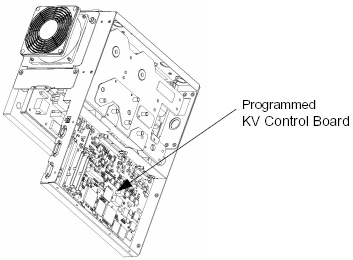

Operating Documentation
Direction 5224328-800, Rev# 5
Dir 5224328-800 LightSpeed 5.X HP60 Limited Access Service
Methods - Adv.
Operating Documentation |
| Required Persons | Preliminary Reqs | Procedure | Finalization |
|---|---|---|---|
| 1 | Timing Not Applicable | 30 mins | 2 hours |
Overview:
If possible, upload JEDI database (from JEDI to console)
Remove front cover of the Power Unit
Replace Programmed KV Control board
Replace the front cover
Reload JEDI software and appropriate database
| Last Revised: | March 2003 |
| Condition | Reference | Eff |
|---|---|---|
Before beginning this procedure, please read the gantry safety information. | - | - |
| ELECTROCUTION HAZARD. | |
| HIGH VOLTAGE PRESENT. | |
| USE PROPER LOCKOUT/TAGOUT PROCEDURES. |
Upload JEDI database (from JEDI) if you wish to retain the existing database after new KV control board installation. In most cases you will want to perform this step, however it may not be possible, depending on the failed KV control board. If it’s not possible, move on.
Move table to its lowest elevation.
Remove power to the gantry using proper Lockout/Tagout procedures.
Remove side top and front gantry covers.
Turn OFF all 3 switches (Axial Drive, HVDC, 120VAC) on the Service Switch Panel.
Unscrew the 12 hex head screws, and remove the front cover from the Power Unit.
Disconnect the 2 ribbon cables from the KV Control board.
Disconnect all wire connections from the board.
Unscrew the screws holding the KV Control board, and remove the board.
Unscrew seven nuts, and remove the
Illustration 1: Programmed KV Control Board

Install the new KV Control board.
Re-connect all wires and ribbon cables.
Re-install the front cover of the Power Unit.
Download new software to the generator.
Ensure torque specifications are followed on all screws.
Download JEDI software using Flash Download Tool.
Download JEDI database (to JEDI) if you wish to restore the database from the replaced KV control board.
Meter verification.
HV Tank Resistor verification (bleeder test).
Reset generator TnT data.
Filament calibration.